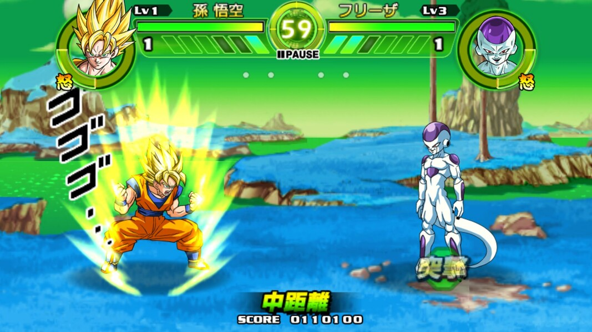

Dragon Ball: Tap Battle
Dragon Ball: Tap Battle é um jogo de luta em 2D onde você controla alguns dos melhores personagens do lendários mangá/anime Dragon Ball, e utilizará um controlador de sistema que foi adaptado perfeitamente para a tecnologia de toque de tela. Muito mais preciso e fluido do que outros títulos do gênero, ele também permite que você utilize game pads virtuais se você quiser. Em Dragon Ball: Tap Battle é muito original e eficiente. Você não precisará de um controle virtual aqui, porque você poderá mover o seu herói confortavelmente e atingir os seus inimigos com ataques especiais. Por exemplo, para recarregar a sua energia, tudo o que você precisa fazer é tocar no seu personagem. Acertar o seu adversário com um Kamehameha é muito simples, basta tocar no seu inimigo que está longe e segurar o dedo.
MINHA OPINIÃO
Dragon Ball: Tap Battle é um jogo de luta espetacular em 2D. Você não tem apenas um sistema de controle perfeito, mas os seus gráficos também estão entre os melhores em termos de jogos de Android. O jogo respeita e enobrece o trabalho de Akira Toriyama ao adaptá-lo para aparelhos móveis, e é também um produto oficial.